愛知県でおすすめのLLMO会社10選｜費用相場と選び方もわかりやすく解説

愛知県は、名古屋のように比較検討が早い都市型の市場もあれば、西三河のように専門的な情報設計が求められる製造業の市場もあり、エリアや業種によって勝ち方が大きく変わります。だからこそ、LLMOを外注するときは、愛知の商圏を理解したうえで、実際のWeb改善や情報設計まで落とし込める会社を選ぶことが大切です。
本記事では、愛知県内でLLMOやAI検索対策に強みを持つおすすめの会社10社を紹介します。あわせて、失敗しないための比較ポイントや、自社の状況に合った費用相場もわかりやすく整理しました。
まずはLLMO対策の基本を押さえたい方は基礎記事から、BtoBの比較検討導線まで見たい方はBtoB向けLLMO会社の比較記事も参考になります。現状把握から始めたい場合は無料LLMO診断も活用できます。
目次

愛知県でおすすめのLLMO会社10選
愛知県でLLMO会社を選ぶときは、地域特性を踏まえて制作や改善まで落とし込めるかを見たほうが失敗しにくいです。ここでは、愛知県内でLLMOやAI検索対策、SEO、Web集客の支援に強みを持つ会社を10社紹介します。
単に「生成AIに対応」と書かれているだけでなく、SEOの土台、情報設計、制作実務までつなげられるかを見ていくと比較しやすくなります。
| 会社名 | 主な特徴 | 向いている会社 |
|---|---|---|
| 株式会社フリースタイルエンターテイメント | Web制作とLLMOコンサルをまとめて相談しやすい | サイト改善とAI検索対策を一体で進めたい会社 |
| 株式会社TROBZ | 愛知・名古屋向けのLLMO発信が濃い | 地域認知をAI検索上で強めたい会社 |
| 株式会社ナレッジホールディングス | AI検索・MEO・SEO・SNSを横断支援 | 店舗型や地域密着型で多面展開したい会社 |
| 株式会社オンカ | 名古屋制作とSEO実務の延長でLLMOを扱える | まず集客導線から整えたい会社 |
| クーミル株式会社 | 名古屋支社あり、制作とAIO/LLMOを両輪で進めやすい | コンテンツやサービスページを伸ばしたい会社 |
| NYマーケティング株式会社 | SEO・オウンドメディア・BtoB支援に強い | BtoBやポータル型サイトを改善したい会社 |
| 株式会社エッコ | 検索に強いサイトの土台づくりが堅い | LLMOの前にSEO基盤を強くしたい会社 |
| Catwork株式会社 | 名古屋ローカルのSEO・Web集客に強い | 地域商圏の中小企業 |
| 株式会社MEcreate | 低〜中価格帯で始めやすい地域向け支援 | 店舗型や地域密着の中小企業 |
| 株式会社ラクー | Web制作・SEO・EC・システム開発まで広い | まずサイト基盤を整えたい会社 |
株式会社AIMAは愛知本社の会社ではありませんが、全国対応でLLMO支援を提供しています。月額5万円の格安LLMOプランは初期費用なし・1ヶ月単位で始められ、質問設計、記事制作、引用チェックに絞って実務を進められます。まず現状だけ確認したい場合は無料LLMO診断から入るのもおすすめです。
1. 株式会社フリースタイルエンターテイメント
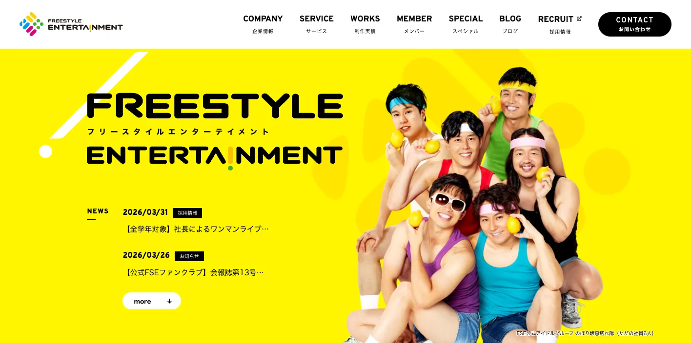
フリースタイルエンターテイメントは、名古屋市中区に本社を置く会社です。Web制作、SEO対策、広告運用、オウンドメディア運用に加えて、LLMOコンサルティングを正式サービスとして持っているため、サイト改善とAI検索対策を分けずに進めやすいのが強みです。
特に相性がよいのは、コーポレートサイト、採用サイト、オウンドメディアを横断して整えたい会社です。制作会社かコンサル会社かで迷う企業でも、両方をまとめて相談しやすい候補といえます。
参考：株式会社フリースタイルエンターテイメント｜LLMOコンサルティング
2. 株式会社TROBZ
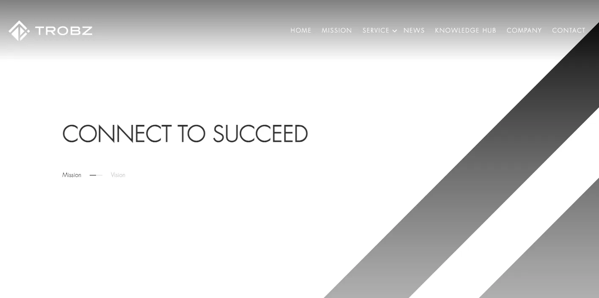
TROBZは、北名古屋市を拠点にAI検索時代の集客をかなり前面に出している会社です。愛知向け、名古屋向けのLLMO記事を継続的に公開しており、AIOやLLMOを「地域ビジネスでどう使うか」という切り口で組み立てています。
愛知県の会社で、地域名と業種を掛け合わせた認知獲得を狙うなら検討しやすいタイプです。愛知の製造業やサービス業の認知拡大を、地域文脈つきでAIに伝えたい会社と相性があります。
参考：株式会社TROBZ｜愛知の製造業・サービス業がLLMOで認知度を上げる秘訣
参考：株式会社TROBZ｜名古屋での認知度を最大化するLLMO対策の具体的手順
3. 株式会社ナレッジホールディングス
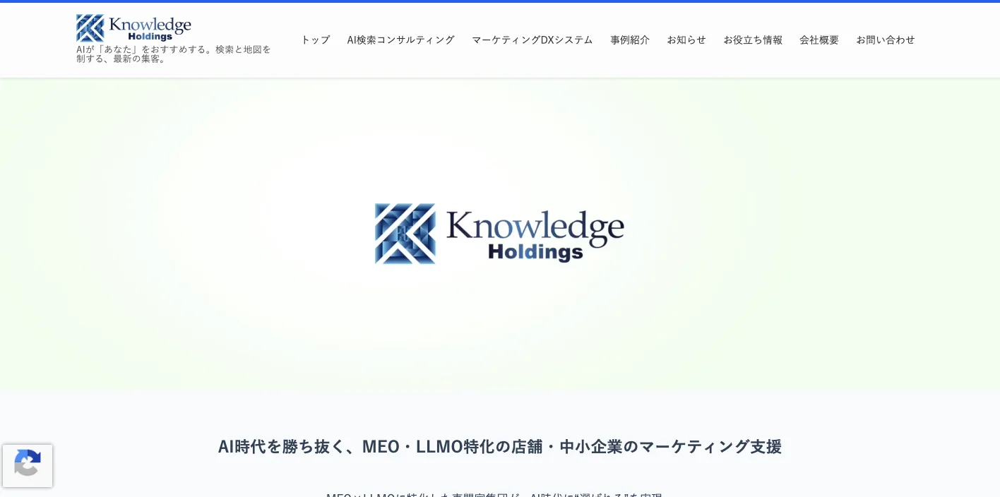
ナレッジホールディングスは東京本店の会社ですが、公式の企業情報では名古屋市中区栄にLLMO対策本部を置いています。AI検索、MEO、SEO、SNSをまとめて扱う設計なので、AI検索対策だけを単独で考えるのではなく、店舗情報や発信面まで含めて整えたい企業に向いています。
愛知でこの会社を検討する意味があるのは、問い合わせ導線がWebサイトだけで完結しない業種です。AI検索・マップ・SNSが分断されると弱い店舗型や地域密着型では、まとめて見られる支援会社は比較候補に入れやすいです。
参考：株式会社ナレッジホールディングス｜LLMOコンサルティング
4. 株式会社オンカ
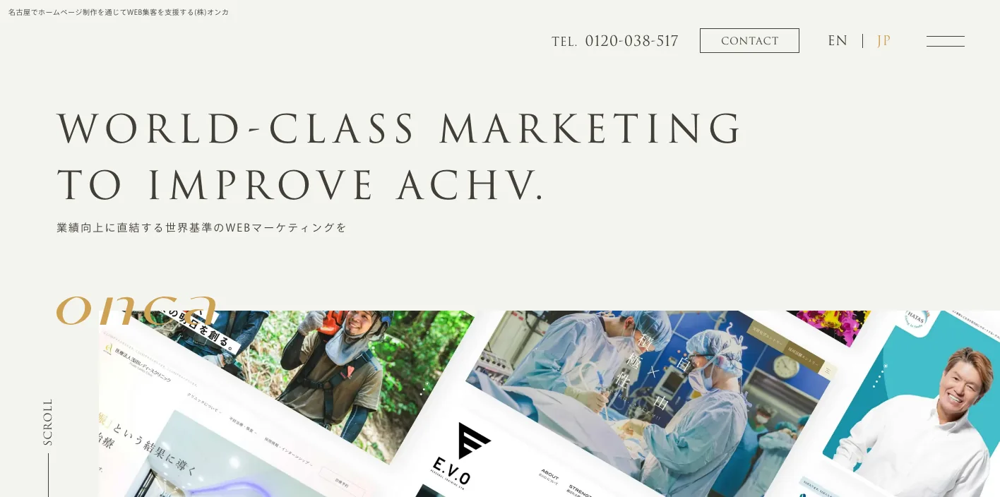
オンカは、名古屋で制作を行いながら、SEOやWeb広告を通じて集客改善を支援する会社です。LLMOを単独の流行語として扱うのではなく、SEOの延長線上にある実務として捉えているので、土台の弱いサイトを無理にAI最適化だけで押し切るようなズレが起きにくいのが特徴です。
愛知でこの会社が向いているのは、すでにホームページはあるが、集客の設計が曖昧な会社です。地域キーワード、サービスページ、問い合わせ導線まで含めて整えたい会社に合います。
参考：株式会社オンカ｜ホームページのLLMO・AIO・GEOの本質と対策方法
5. クーミル株式会社
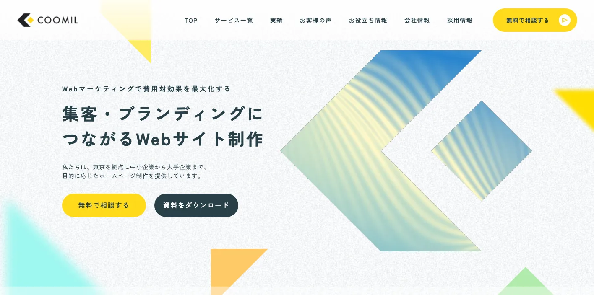
クーミルは東京本社ですが、公式の企業情報で名古屋支社を公開しており、SEOやWeb制作に加えてAIO/LLMOコンサルティングまで扱っています。記事制作やサービスページ制作を、SEOとAI流入の両方に関わる施策として見やすいのが特徴です。
特に、愛知でオウンドメディアや比較記事、サービスページを増やしていきたい会社には使いやすい候補です。コンテンツを軸にLLMOへつなげたい中間ニーズを拾いやすい会社といえます。
参考：クーミル株式会社｜AIO/LLMO対策・AI Overviewsコンサルティング
6. NYマーケティング株式会社
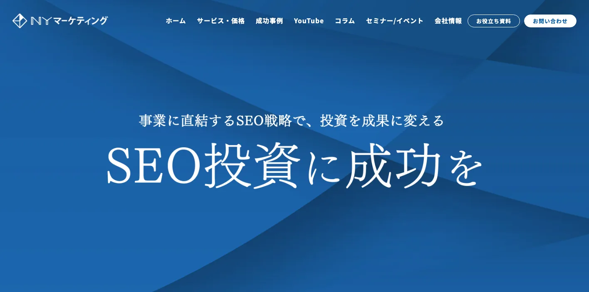
NYマーケティングは、名古屋駅前のJPタワー名古屋に本社を置く会社です。SEOコンサルティング、オウンドメディア運用、記事制作、BtoBコンテンツマーケティング支援まで持っており、特にSEOを中核にした改善に強い構成になっています。
愛知でこの会社を選びやすいのは、LLMO単体よりも、まず検索流入と問い合わせ導線を強くしたい場合です。BtoB企業、ポータル型サイト、コンテンツ量が多いサイトの改善と相性がよく、そこからAI検索対策へ広げやすいです。
参考：NYマーケティング株式会社｜SEOコンサルティング・SEO対策代行
参考：NYマーケティング株式会社｜BtoB専門コンテンツマーケティング支援
7. 株式会社エッコ
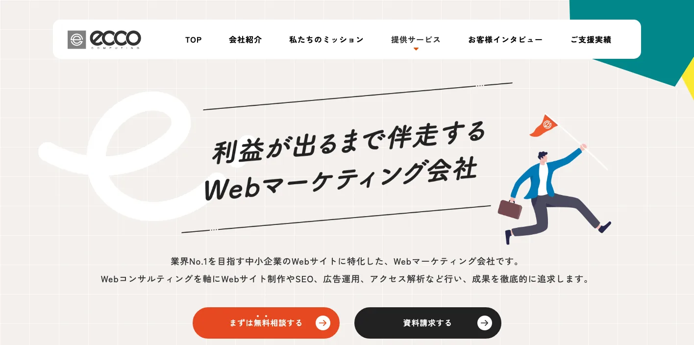
エッコは、名古屋を拠点にSEO、広告運用、アクセス解析、ホームページ制作まで対応しているWebマーケティング会社です。検索に強いサイトの土台づくりを長く続けてきた実績があり、LLMOという新しい言葉だけに振り切らず、まず検索評価を積み上げる考え方を取りやすい会社です。
AI検索に引用される前提として、ページ品質、導線、コンテンツ整理が必要になります。その意味で、LLMOの前工程を堅く作れる会社として比較候補に入れやすいです。
参考：株式会社エッコ｜名古屋でホームページ制作、Web制作なら株式会社エッコ
8. Catwork株式会社
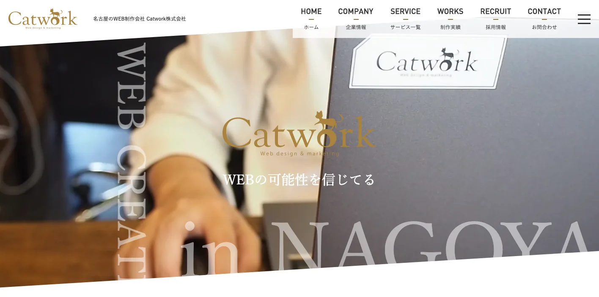
Catworkは、名古屋のWeb制作会社として、ホームページ制作、Webマーケティング、SEO対策を通じて中小企業の集客を支援しています。自社サイトでも「名古屋 ホームページ制作」「名古屋 SEO」などの地域キーワード実績を打ち出しており、地元商圏での勝ち筋を意識した支援が期待しやすい立ち位置です。
この会社が愛知向きなのは、広域の大企業向けというより、地元商圏で結果を出したい中小企業との相性がよいからです。地域検索の文脈で相談しやすい候補です。
9. 株式会社MEcreate
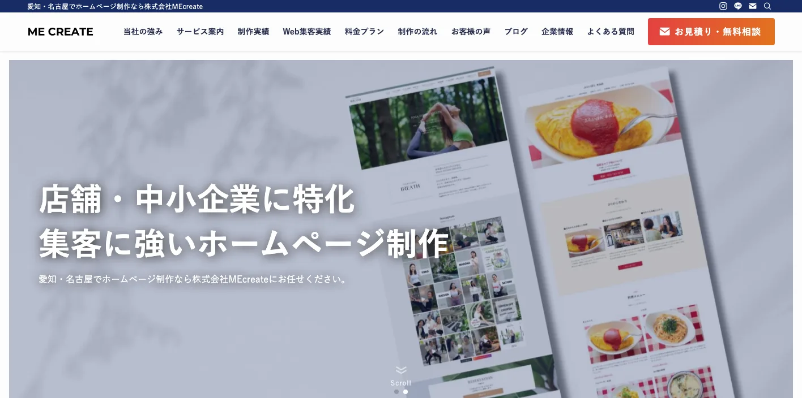
MEcreateは、名古屋市中村区名駅を拠点に、ホームページ制作、SEO対策、MEO対策、広告運用代行まで扱う会社です。地域企業の集客支援に寄った構成で、価格ページも公開しているため、最初の検討段階でも費用感をつかみやすいです。
愛知で検討しやすいのは、店舗型ビジネスや地域密着の中小企業です。MEOやSEOの組み合わせで地域集客を固め、その先でAI検索にも広げたい会社に合います。
参考：株式会社MEcreate｜愛知・名古屋でホームページ制作なら株式会社MEcreate
10. 株式会社ラクー
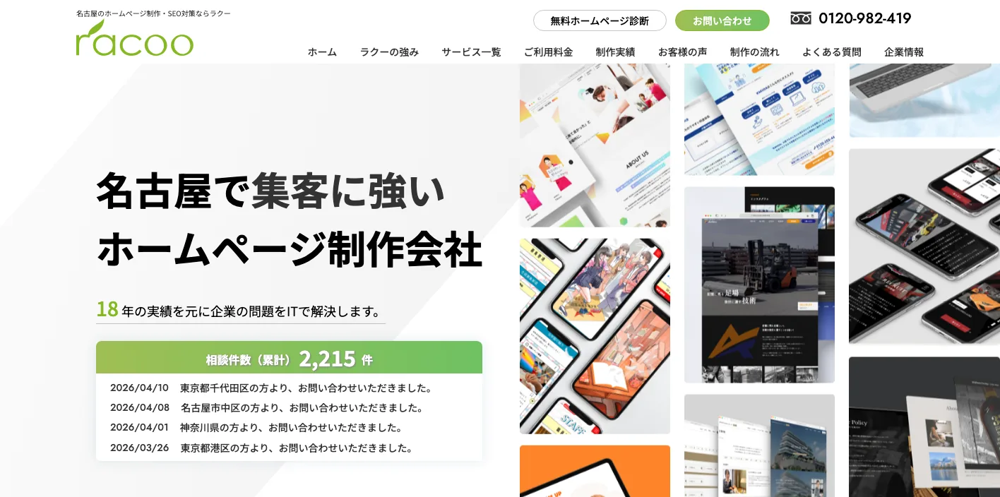
ラクーは、名古屋市中村区名駅に本社を置く会社で、ホームページ制作、SEO対策、ECサイト構築、Webシステム開発まで対応しています。LLMO専業というより、まずWeb集客の基盤を整えたい会社に向いたタイプです。
サービスサイト、コーポレートサイト、EC、ポータルまで広く触れられるため、AI検索対策の前にサイト自体を強くしたい会社には現実的な選択肢になります。
地域比較も含めて見たい方は東京でおすすめのLLMO会社10選や大阪でおすすめのLLMO会社10選もあわせて確認すると、愛知ならではの違いが見えやすくなります。
愛知県のLLMO会社を比較する際のポイント
愛知県でLLMO対策を外注するときは、愛知の商圏や業種の特徴を理解したうえで、情報を整理できる会社かどうかを見ることが大切です。診断や提案だけで終わるのではなく、地域の市場に合わせてページ制作や改善まで進められる会社のほうが、成果につながりやすくなります。
特に愛知は、名古屋の都市型商圏と西三河の製造業商圏が同居しているため、ひとつのテンプレートを全社に当てるだけでは弱い地域です。
名古屋市内型の集客に強いか
愛知県内で、まず見るべきなのが名古屋市内の集客です。名古屋市は230万人超の人口を抱える大都市で、愛知県内でも事業所数が最も多く、競合の密度が高い市場です。ここでは、ただ情報を載せるだけでは埋もれやすく、サービスページの見せ方や比較されやすい切り口まで考えて設計できる会社のほうが向いています。
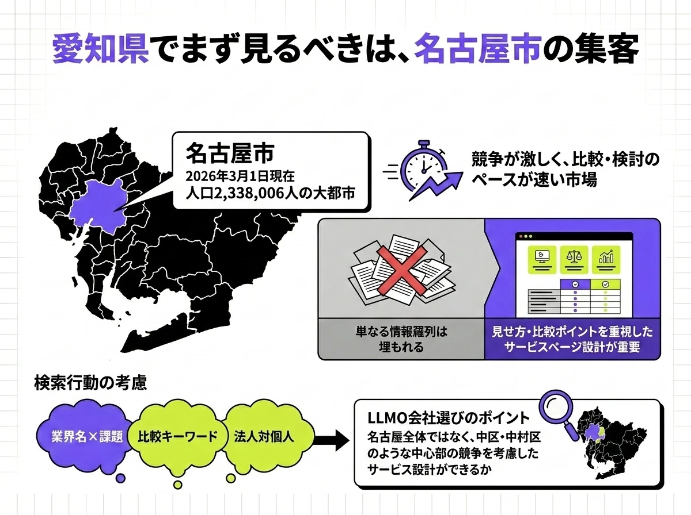
特に名古屋市内では、地域名だけでなく、「業種名×悩み」「比較ワード」「法人向け・個人向け」など、検索され方の違いまで考える必要があります。名古屋をひとくくりにせず、中区や中村区の競争まで踏まえて設計できるかを見たほうが安心です。
豊田・岡崎・刈谷・安城など製造業商圏を理解しているか
愛知県で名古屋と同じくらい重要なのが、豊田・岡崎・刈谷・安城などを含む製造業の商圏です。愛知県は製造品出荷額等が全国トップクラスのモノづくり県で、BtoB向けの情報をどう見せるかが成果を左右しやすい地域です。店舗集客と同じ感覚でページを作ると合わないことがあるため、技術力や対応範囲、実績を整理できる会社が向いています。
製造業向けのLLMOでは、目立つ言い回しよりも、専門的な内容をわかりやすく伝えることが重要です。調達担当者、現場責任者、経営層など立場ごとに必要な情報を切り分けられるかを見たいところです。
医療・介護・教育など地域密着業種に対応できるか
愛知県では、製造業だけでなく、医療、介護、教育のように地域とのつながりが強い業種も大きな市場です。高齢者福祉保健医療計画や福祉保健医療ビジョンのように、県としても継続的な需要を見据えている領域では、地域で信頼される情報発信の重要性が高まります。
このような業種では、軽すぎる表現や煽りの強い見せ方は逆効果になりやすいです。そのため、業界を理解していて、丁寧に情報を設計できるかを確認しましょう。
参考：愛知県｜第9期愛知県高齢者福祉保健医療計画を策定しました
愛知の中小企業でも続けやすい支援体制か
愛知県内の会社すべてが、最初から大きな予算をかけられるわけではありません。名古屋でも三河でも、まずは小さく始めて反応を見ながら進めたい会社は多いはずです。だからこそ、診断だけ、記事制作だけ、改善提案付き、伴走型など、支援の形に幅がある会社のほうが使いやすいです。
続けやすい会社は、最初から大きな施策を押しつけるのではなく、今のサイト規模や社内体制に合わせて現実的な進め方を考えてくれます。提案の立派さより、本当に無理なく続けられるかを見ることが大切です。
愛知の現場感に合わせて制作まで落とせるか
最後に重要なのは、提案だけで終わらず、制作まで落とせるかです。愛知県は名古屋の都市型商圏、製造業が強い西三河、地域密着の色が濃い知多や東三河が並ぶ県なので、同じテンプレートを全社に当てはめても勝ちにくいです。実際の商圏や業種に合わせて、サービスページ、比較記事、FAQ、導線改善まで具体化できる会社のほうが成果に近づきます。
LLMOは、診断資料を作って終わる施策ではありません。AIに拾われやすい構造を意識しつつ、読者が比較しやすいページを作り、問い合わせまでつなぐところまで見られる会社を選ぶと失敗しにくいです。支援範囲の考え方はLLMO対策会社の比較記事も参考になります。
愛知県のLLMO会社に依頼する費用相場
LLMOの費用は、どの会社に頼んでも同じではありません。アドバイスだけを受けるのか、記事制作まで任せるのか、サイト全体の改善まで伴走してもらうのかで、金額は大きく変わります。
そのため、安いか高いかだけで判断するのではなく、どこまで対応してもらえるのかを見ながら考えることが大切です。
| 支援タイプ | 目安 | 主な内容 |
|---|---|---|
| 無料相談〜簡易診断 | 0円〜 | 課題整理、方向性の確認、相性チェック |
| ライトな継続支援 | 月額5万〜7万円台 | 基本改善、少数記事、月次伴走の入口 |
| 伴走型の標準帯 | 月額10万〜20万円台 | 戦略設計、改善提案、記事設計、定例 |
| 戦略〜大規模支援 | 月額30万〜50万円以上 | 実装、複数商圏対応、継続的な全体改善 |
愛知では「無料相談〜簡易診断」を入口にしやすい
愛知で最初に相談先を探すなら、いきなり高額な契約を結ばなくても始められます。たとえば、NYマーケティングはSEOの初回相談を無料で受け付けており、MEcreateも料金ページで相談導線を明示しています。まず課題を整理したい会社には使いやすい入口です。
ただし、本格的な分析や改善提案まで求めるなら、無料だけで完結するとは考えないほうがよいです。無料相談は入口、本格的な支援は有料と捉えるのが自然です。
月額5万〜7万円台はライトな継続支援の入口になりやすい
愛知でまず小さく始めたいなら、月額5万〜7万円台は見やすい価格帯です。MEcreateの価格公開ではSEOコンサルを月額66,000円で案内しており、地域の中小企業にとって継続支援の入口としてわかりやすい水準です。
この価格帯は、サービスページの整理、少ない本数の記事制作、月1回ほどの打ち合わせをしながら改善していく使い方に向いています。まだ大きく投資する前の会社が試しやすいラインです。
参考：株式会社デジタルアイデンティティ｜SEO対策の費用相場はいくら？
月額10万〜20万円台は伴走型の現実的な価格帯
継続的にしっかり支援を受けたいなら、月額10万〜20万円台はかなり現実的な価格帯です。相場系の記事でも、総合的なSEOコンサルや継続改善はこのレンジから案内されることが多く、分析、改善提案、記事設計、定例ミーティングまで含まれやすくなります。
AI検索対策は、1ページだけ直して終わるよりも、比較記事、FAQ、サービスページ、指名検索につながる導線まで整えたほうが成果につながりやすいです。名古屋の競争が激しい市場や、西三河のBtoB領域を見据えるなら、この価格帯がひとつの基準になります。
参考：Web幹事｜愛知県・名古屋市のおすすめSEO対策会社9社を厳選
参考：株式会社デジタルアイデンティティ｜SEO対策の費用相場はいくら？
戦略設計や大規模支援まで入ると月額30万円〜50万円以上になる
大規模サイトや競争が激しい業種、複数の部署をまたぐプロジェクトになると、費用はさらに上がります。大規模なSEO/集客支援の相場感でも、30万円以上から本格レンジに入るケースは珍しくありません。
愛知でこの価格帯が必要になるのは、記事制作だけではなく、事業全体の検索導線を作っていくケースです。複数のサービスを持つ会社、全国向けと地域向けの両方を狙う会社、ポータル型や大規模なコーポレートサイトを運営している会社では、制作・実装・運用の3つにコストがかかると考えたほうが実態に近いです。予算感を広く見たい方はLLMO対策会社の比較記事も参考になります。
参考：株式会社デジタルアイデンティティ｜SEO対策の費用相場はいくら？
参考：Web幹事｜愛知県・名古屋市のおすすめSEO対策会社9社を厳選
愛知県のLLMO会社に関するよくある質問
愛知県でLLMO会社を探していると、「地元の会社に頼む意味はあるのか」「SEO会社とは何が違うのか」「どれくらいで成果が出るのか」など、細かい疑問が出てきやすいです。ここでは、よくある質問をまとめました。
愛知県のLLMO会社に依頼する意味はありますか？
はい、あります。愛知の地域性を理解している会社なら、名古屋の比較検討文脈や西三河の製造業文脈に合わせて、AIに見つけられやすい情報の出し方を考えやすいからです。
また、対面やオンラインで細かな相談をしながら進めたい会社にとっては、地域理解のある相手と進められること自体が強みになります。
愛知本社のLLMO会社でないと意味はありませんか？
必ずしも愛知本社である必要はありません。大事なのは所在地ではなく、LLMOに関する知見があり、自社の情報をAIに正しく伝わる形で整えられるかどうかです。
そのため、オンライン中心でも、提案が具体的で、実際の改善まで進められる会社なら、県外の会社でも十分に候補になります。
愛知の中小企業でもLLMOに取り組む意味はありますか？
あります。今は、取引先を探す企業担当者や、サービスを比較する一般ユーザーが、ChatGPTなどのAIを使って情報収集する場面が増えています。
まだ多くの中小企業が本格的に取り組んでいない段階だからこそ、先に情報を整えた会社がAI上の候補入りを取りやすいです。
愛知の製造業や店舗型ビジネスでもLLMOは効果がありますか？
はい、効果は期待できます。製造業では、技術力や対応できる内容をAIにわかりやすく伝えられれば、情報収集している担当者に見つけてもらいやすくなります。
店舗型ビジネスでも、「名古屋市で〇〇ができる店」のような探し方に対して、自社の情報がAIの回答に入りやすくなる可能性があります。
SEO会社とLLMO会社は何が違いますか？
違いは、主に狙う相手と情報の整え方です。SEO会社は、Googleなどの検索結果で上位表示を目指す支援を行います。
一方、LLMO会社は、ChatGPTやGeminiのようなAIに情報を理解してもらい、回答の中で取り上げられやすくするための支援を行います。検索順位を上げるというより、AIに選ばれやすい情報設計まで進める点が大きな違いです。
愛知のLLMO会社に依頼したら、どれくらいで成果が出ますか？
どれくらいで変化が出るかは、対象となるAIや、今のWeb上の情報量によって変わります。
比較的早ければ数週間から1か月ほどで変化が見えることもありますが、安定してAIに取り上げられる状態を作るには、3〜6か月ほどを目安に考えるのが現実的です。
愛知県のLLMO会社を選ぶときは何を確認すればよいですか？
まず確認したいのは、その会社が本当にLLMOを理解しているかどうかです。名前だけLLMOに変えていて、実際には従来のSEO提案とほとんど変わらないケースもあります。
そのため、自社が今AIにどう見られているかを診断できるか、AI向けの具体的な施策を持っているか、そして自社の商圏や予算に合う料金体系かを確認しておくことが大切です。
愛知県でLLMO会社を選ぶなら、名古屋市内と西三河の製造業商圏を分けて考えましょう
愛知県でLLMO対策を進めるときに大切なのは、自社の情報がAIにどう伝わり、どう取り上げられるかを考えて設計することです。名古屋のように比較されやすい市場や、三河のように専門性が求められる製造業の商圏では、AIに見つけてもらえることが大きな強みになります。
今回紹介した10社も、それぞれ得意な領域や対応できる範囲が違います。だからこそ、言葉だけでLLMOをうたう会社ではなく、現状の診断からページ改善、制作、運用まで実際に進められる会社を選ぶことが重要です。
まずは、自社や自社サービスがChatGPTやPerplexityなどの生成AIで今どのように扱われているかを確認してみましょう。そのうえで、本記事の比較ポイントや費用相場を参考にしながら、自社に合ったLLMO会社を選んでいくのがおすすめです。初手の確認だけでよければ無料LLMO診断、すぐに相談したい場合はお問い合わせから進められます。